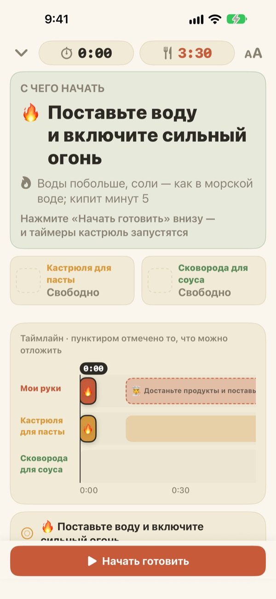
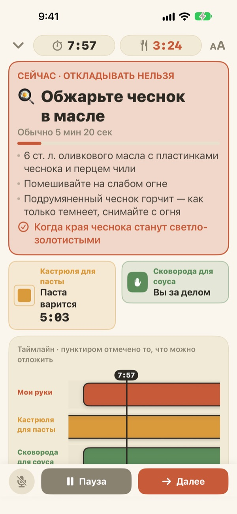
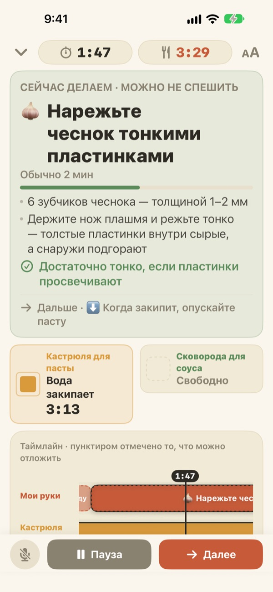
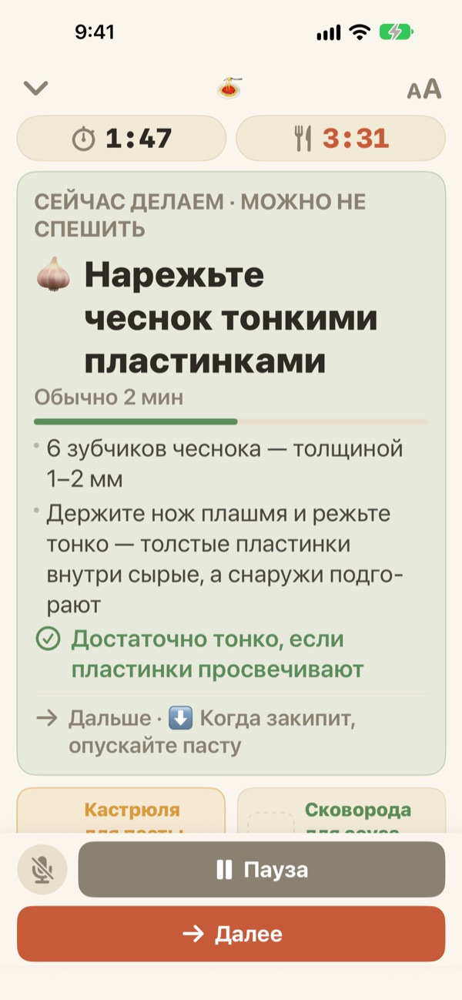

Паста варится,
а соус уже готов
Когда две кастрюли идут в разном темпе, Geusaie крупно показывает одно дело, которое вашим рукам нужно сделать прямо сейчас. Соус рассчитывается в обратную сторону от момента, когда паста будет готова.
Все функции бесплатны. Аккаунт не нужен.

Попробуйте
Приготовьте алио-олио в 20 раз быстрее. Нажмите «Начать готовить», а потом «Далее» каждый раз, когда вы бы закончили дело. Посмотрите, как меняется карточка, когда пора откидывать пасту.
Три таймера, а паста всё равно разварилась?
Таймер для пасты, таймер для соуса, а время для чеснока держите в голове, и вскоре уже непонятно, что сначала. Вы режете чеснок как раз тогда, когда пора сливать воду, а соус доходит на две минуты позже. Geusaie знает рецепт как «сначала это, потом то» и подсказывает только одно дело на сейчас.
Что не может ждать, становится красным
Откинуть пасту, снять чеснок, пока не подгорел: когда опоздание испортит блюдо, карточка становится терракотовой и просит отложить нарезку.
Когда кастрюля готова, приходит уведомление, даже если вы не смотрите на экран, и в нём сказано, что делать прямо сейчас.

Нарезка, когда руки свободны
Нарезать чеснок, натереть сыр, отмерить: у этих дел нет точного времени, поэтому секунды здесь не считаются. Полоска заполняется, пока руки свободны, замирает, когда зовёт кастрюля, и продолжается с того же места.
Включили плиту на три минуты позже? Всё остальное сдвинется на три минуты. Расписание каждый раз пересчитывается по тому, что вы сделали на самом деле.

Поставьте рядом с плитой и говорите
Четыре размера шрифта, чтобы читать с шага-двух, а экран не гаснет, пока вы готовите.
Руки мокрые? Скажите далее, и приложение перейдёт к следующему делу без касаний.

Три шага до ужина
- 1
Выберите блюдо
Видно, сколько примерно займёт и сколько нужно кастрюль.
- 2
Нажмите «Начать готовить»
Сначала появится первое дело, а таймеры кастрюль запустятся в момент нажатия.
- 3
Готово? Далее.
Нажмите кнопку или скажите «далее», и появится следующее дело.
Цвет показывает срочность
- Зелёный
- Подготовка. Можно не спешить.
- Горчичный
- Пора к кастрюле. Сделайте сейчас, но без суеты.
- Терракотовый
- Промедлите, и паста разварится или чеснок подгорит. Сейчас.
- Ячейки кастрюль
- Сжимающийся квадрат и есть оставшееся время. Время кастрюль никогда не прячется.
На шкале времени пунктирные полоски означают дела, которые могут подождать.
Все функции бесплатны
Бесплатно
- Оба рецепта
- Отдельный таймер для каждой кастрюли и вся шкала времени
- Уведомление, когда кастрюля готова
- «Далее» голосом
- Четыре размера шрифта
- Открыть рецепт через Siri или Быстрые команды
Поддержать разработчика (по желанию)
- Если приложение помогает, можно оставить небольшие чаевые в настройках
- Чаевые ничего не открывают. Без них все функции остаются вашими
Разовые чаевые, а не подписка.
Без аккаунта, без рекламы, работает и без интернета.
Частые вопросы
Говорю «далее», но ничего не происходит.
Кнопка микрофона внизу слева красная, когда приложение слушает, и серая, когда выключена. В первый раз разрешите и микрофон, и распознавание речи; если вы отказали, включите их снова в «Настройки» > Geusaie. Приложение слушает слово, написанное на кнопке «Далее». На очень шумной кухне просто нажмите «Далее».
Кастрюля готова, но уведомления не было.
Проверьте, что уведомления включены в «Настройки» > «Уведомления» > Geusaie. Режим фокусирования может их заглушить. Уведомления приходят только тогда, когда готова кастрюля; подготовка вас никогда не торопит.
Что будет с расписанием, если я начну позже?
Оно пересчитается по тому, что вы сделали на самом деле. Включите плиту на три минуты позже, и всё дальнейшее сдвинется на три минуты, а соус останется рассчитан обратно от момента, когда паста будет готова.
Текст слишком мелкий.
На экране готовки нажмите кнопку размера шрифта справа вверху и выберите «Обычный», «Крупный», «Крупнее» или «Самый крупный». Выбор сохранится.
Гаснет ли экран во время готовки?
Нет. Пока вы готовите, экран не гаснет, так что трогать его мокрыми руками не придётся.
Какие блюда есть?
Алио-олио (около 15 минут, 2 кастрюли) и паста в томатно-сливочном соусе (около 20 минут, 2 кастрюли) по рецептам Serious Eats, Gimme Some Oven, RecipeTin Eats и The Burnt Butter Table. Подойдёт любое блюдо, где одновременно работают две кастрюли, так что напишите, какой рецепт вы хотите увидеть.
Записывается ли мой голос?
Нет. Приложение слушает только слово «далее» и не записывает и не хранит звук. Если устройство поддерживает, распознавание идёт прямо на устройстве. Личные данные не собираются.
Можно открыть через Siri?
Да. Выберите блюдо в Siri или в приложении «Быстрые команды», и сразу откроется его экран готовки. Таймеры запустятся, когда вы будете готовы ставить воду и нажмёте «Начать готовить».
На каких устройствах работает?
На iPhone и iPad с iOS 17 или новее. Аккаунт и интернет не нужны.
Как сообщить о проблеме или предложить рецепт?
Через «Настройки» > «Отправить отзыв» в приложении или по почте ниже. Укажите модель устройства и версию iOS, так мы разберёмся быстрее. Обычно отвечаем в течение нескольких дней.
Что-то не получается, заметили странность или есть рецепт на примете? Пишите на leeo@kakao.com.